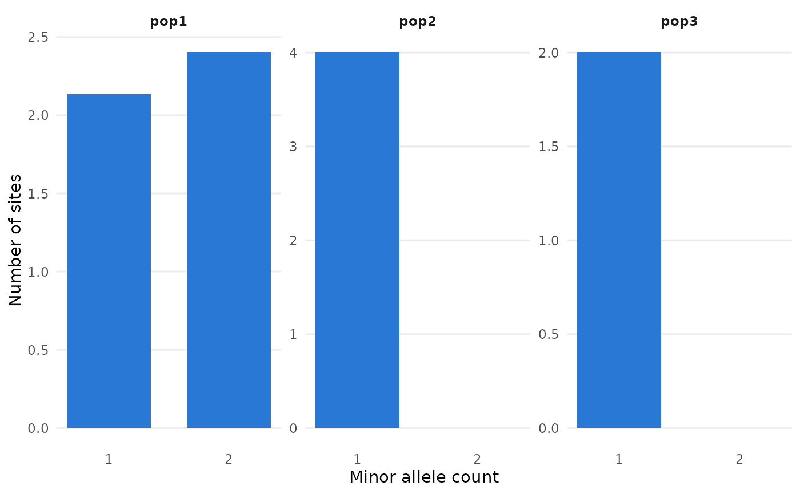
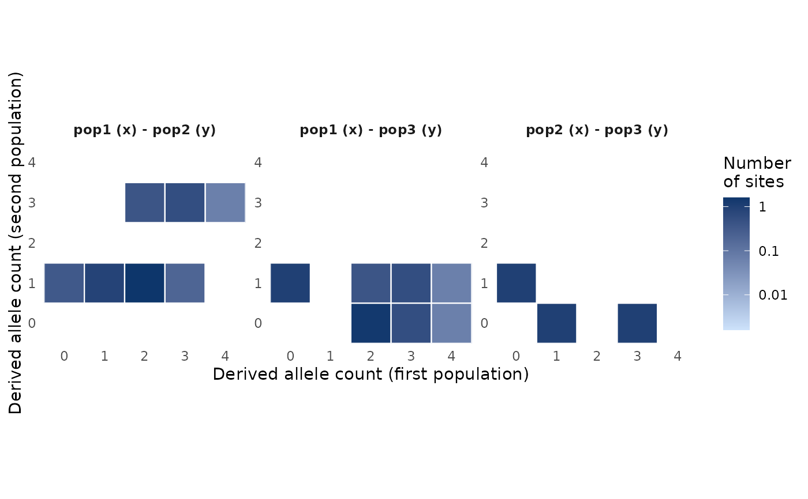
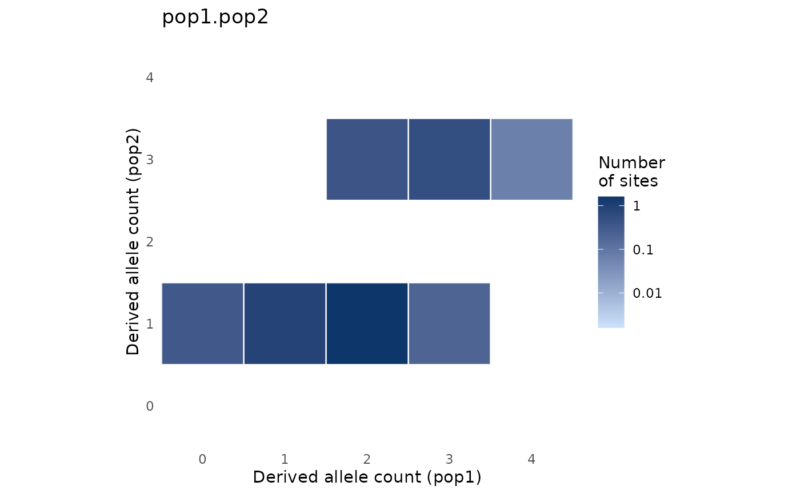

Plot the site frequency spectra computed by pop_sfs() (bar plots of the
number of sites by allele count, one panel per population),
pairwise_pop_sfs() (heatmaps of the joint spectra, one panel per pair of
populations), or a single spectrum returned with type = "array" (a bar
plot for one population, a heatmap for two). The output of
pop_sfs_preview() is plotted as the number of segregating sites for each
projection, one panel per population, with the projection chosen by
default marked. Spectra of more than two populations (from
nwise_pop_sfs()) cannot be plotted; use pairwise_pop_sfs() to plot the
joint spectra of pairs of populations.
Usage
# S3 method for class 'sfs'
autoplot(object, masked = FALSE, log = NULL, min_sites = NULL, ...)
# S3 method for class 'pop_sfs_tbl'
autoplot(object, masked = FALSE, log = NULL, ...)
# S3 method for class 'pairwise_sfs_tbl'
autoplot(object, masked = FALSE, log = NULL, min_sites = NULL, ...)
# S3 method for class 'sfs_preview_tbl'
autoplot(object, ...)Arguments
- object
the output of
pop_sfs()orpairwise_pop_sfs()(withtype = "tidy", the default), ansfsobject of one or two populations (returned withtype = "array"), or the output ofpop_sfs_preview().- masked
boolean, whether to show the masked cells of the spectra. Defaults to
FALSE.- log
boolean, whether to show the numbers of sites on a log scale (the y axis of bar plots, the colour scale of heatmaps). If
NULL(the default), a log scale is used for heatmaps only.- min_sites
the lower limit of the log colour scale of heatmaps: cells with fewer (but more than 0) sites are shown with the lightest colour. If
NULL(the default), a thousandth of the largest number of sites in a cell.- ...
currently unused.
Details
The masked cells of the spectra (the corners, i.e. sites monomorphic in
the projected sample, and the cells that were folded out in a folded
spectrum; see pop_sfs()) are not shown by default. In heatmaps, the
numbers of sites are shown on a log scale by default, and empty cells
are left blank. As the projection spreads each locus over many cells, many
cells have a tiny fraction of a site: on a log scale, the colour scale
starts at min_sites (by default, a thousandth of the largest number of
sites in a cell), and cells with fewer sites are shown with its lightest
colour (as vmin in the plots of dadi).
Examples
example_gt <- load_example_gt("grouped_gen_tbl")
# the 1D spectrum of each population
example_gt %>%
pop_sfs(n_proj = 4) %>%
autoplot()

# the joint spectrum of each pair of populations
example_gt %>%
pairwise_pop_sfs(n_proj = 4, folded = FALSE) %>%
autoplot()

# a single spectrum
sfs_2d <- example_gt %>%
pairwise_pop_sfs(n_proj = 4, folded = FALSE, type = "array")
autoplot(sfs_2d$pop1.pop2)

# the number of segregating sites for each projection
example_gt %>%
pop_sfs_preview() %>%
autoplot()